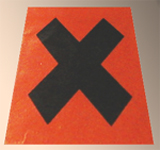

Dtp :
C'est effectivement un sujet évoqué dans
un autre article du courrier des lecteurs.
Lien.
Il n'y
a pas de magie : il s'agit plus d'une trace d'un état poudreux que de
quelque chose qui semble encore poudreux. Le résultat est solide. On fait donc la
différence visuellement. Pour autant,
cette méthode d'application contemporaine est originale et inimitable.
Elle n'est pas dépourvue par ailleurs d'un intérêt pédagogique et
démontre au passage l'intérêt du procédé
séparé liant+pigment.
Pour vous répondre, la plupart des
liants conviennent. Les diluants doivent être adaptés : eau pour
la peinture à l'eau (acrylique, tempera, gomme arabique, ...), essence pour la
peinture à l'huile, éthanol pour la laque de Coromandel, etc. Les
quantités varient considérablement selon le procédé et surtout selon
le type de résultats que vous souhaitez obtenir. Elles correspondent aux proportions habituellement utilisées pour chaque
procédé.
Une précision : il vaut mieux
travailler sur un fond clair avec de faibles quantités de pigment sans
quoi l'on va très vite vers les sombres. Bien sûr tout est possible
mais a priori il vaut mieux pour démarrer, afin de bien estimer les
possibilités de cette technique, raisonner comme si vous alliez
réaliser un glacis : très peu de pigment par
rapport au liant, et beaucoup de médium.
On peut aussi doser l'incertitude en faisant jouer les rapports entre
liant, médium,
diluant,
pigments (chacun a son comportement, c'est très sensible avec
cette technique), charges,
support et environnement
concret.
Donc rien moins que sept facteurs aussi
essentiels les uns que les autres, combinables à l'infini. Sans parler
de votre action à vous, votre action mécanique sur cet ensemble.
C'est
l'opposé de l'application classique d'une peinture en pâte qui tend
précisément à réduire ce nombre de facteurs d'incertitude. Avec selon
le cas le défaut ou l'avantage de réduire le nombre de
possibilités.
Le support, son choix et son traitement
peuvent permettre de réaliser des effets picturaux qui ressembleront
un peu à cet exemple naturel pris dans l'article consacré aux
techniques de projection :

La poudre mate qui effleure le sol de
glace brillante de cet
astre révèle son relief. Pour obtenir des résultats sensiblement
équivalents en peinture, il vaut mieux choisir un pigment n'aimant pas
s'assembler en grumeaux et mettre à profit la pesanteur terrestre en
travaillant à la verticale. Ou bien souffler
en faisant très attention car faire voler la poudre pigmentaire n'est pas sans danger (voir
fin de
l'article).
Le liant est très important également :
si vous souhaitez poursuivre le travail dans le frais il vaut mieux
choisir l'huile.
Peut-être voudrez-vous travailler au
repoussé, en mettant en oeuvre des corps
non miscibles (liants polaires et
apolaires typiquement), une technique
très intéressante. Ou expérimenter les
émulsions.
Que conseiller ? D'abord et toujours l'expérimentation afin de vous
créer vos méthodes. C'est un conseil sérieux quelles que soient vos
connaissances car vous avez affaire à une quantité importante de
paramètres et de possibilités à partir du moment où vous dissociez
l'application du liant de celle du pigment, car c'est ce dont il est
question ici.
Tentez peut-être en priorité d'attacher
tel facteur à tel degré de contrôle et à tel résultat. Par exemple
avec l'acrylique, sans eau ni médium, vous obtenez un certain type de
résultats fins, intacts, mais le pigment ne sera pas bien couvert, pas
bien protégé si vous le projetez sur la masse de liant.
En projetant de l'eau par-dessus, le
mouillage est en général meilleur
mais les résultats deviennent plus diffus et aléatoires. Vous pouvez y
perdre l'impression de poudre. Les pigments
se répandent, et surtout le liant s'est-il vraiment lié au pigment par
cet arrosage... Pas sûr. Au lieu d'ajouter de l'eau, peut-être aurait-il fallu projeter le liant un peu dilué par-dessus le pigment et
non le contraire.
Avec l'acrylique c'est souvent le cas.
Avec l'huile, dans ce procédé, le
mouillage semble plus aisé pour le cas général (il faut quand même se
méfier des pigments polaires), mais
de toute façon quel que soit le liant et le médium, il faudra
quasiment toujours une projection au-dessus pour protéger le pigment
efficacement.
Il existe trop de possibilités pour
qu'il soit réaliste de donner une ou même plusieurs recettes.
Par contre on peut donner quelques recommandations objectives valables
quelle que soit votre méthode : protégez le pigment (liants, médiums),
respectez des temps de séchage raisonnables entre les couches et
assurez-vous de la compatibilité physico-chimique de tous les éléments
en présence. Au-delà, tout est absolument ouvert.

A ceci près : la projection de pigments
est une technique puissante et instructive mais elle engendre un
danger inhabituel. Le pigment vole.
Protégez-vous et tenez compte s'il vous plaît des avertissements du
précédent courrier des lecteurs consacré à ce sujet.
Lien.